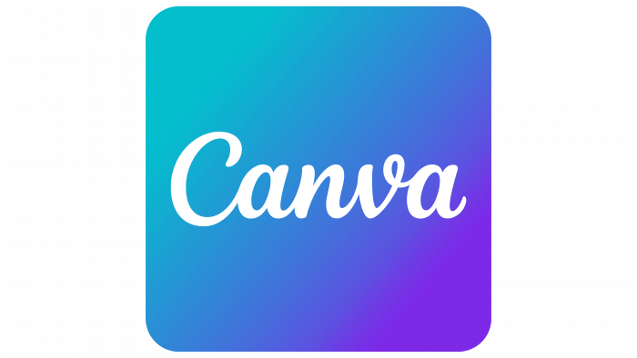

COMBATE INTENSO
Enfrenta hordas de criaturas implacáveis com golpes rápidos e desvios precisos no momento certo.
Sobrevive. Escolhe. Enfrenta o destino que te espera no Labirinto.
EXPLORAR LABIRINTO// A AVENTURA
O que começou como uma simples viagem turística a Creta rapidamente se transformou num pesadelo arqueológico.
Após cair acidentalmente num abismo oculto, Aiden Clark acorda encurralado no coração do lendário
e perigoso Labirinto de Cnossos.
Sem mapas e sem saída óbvia, a sua única certeza é que precisa de escapar antes que seja tarde demais.
Para sobreviver, Aiden terá de desbravar salas repletas de segredos antigos, tomar decisões drásticas de vida
ou morte, conquistar o favor dos deuses do Olimpo e preparar-se para o derradeiro confronto contra o senhor absoluto
das sombras: o temível Minotauro.
Enfrenta hordas de criaturas implacáveis com golpes rápidos e desvios precisos no momento certo.
Ganha o respeito e o favor dos deuses. As tuas ações determinam se recebes o poder de Ares, Atena ou Poseidon.
Cada caminho tomado altera o rumo da tua jornada. Serás misericordioso ou focar-te-ás apenas na tua sobrevivência?
// SISTEMA DE FAVORES
// SABEDORIA E PROTEÇÃO
Explora os recantos mais escondidos para desvendar relíquias ocultas. A Égide protetora de Atena garante-te uma resistência defensiva sem igual contra os perigos da masmorra.
// BRUTALIDADE E GUERRA
Escolha o caminho do confronto direto. O Deus da Guerra recompensa a coragem e a agressividade pura na arena, aumentando drasticamente a força de cada um dos teus ataques.
// MARES E RESILIÊNCIA
Demonstra compaixão para com as almas perdidas que habitam o labirinto. O governante dos oceanos recompensa a tua bondade com a energia vital necessária para curar feridas.
// GALERIA DOS INIMIGOS
Um antigo sentinela de armadura pesada. Patrulha as plataformas de pedra e ataca qualquer intruso que cruze o seu campo de visão.
Uma criatura voadora bizarra que vigia as salas a partir do ar. Ataca à distância e persegue os jogadores sem descanso.
Da antiga raça da famosa Medusa, conhecida por ter serpentes venenosas no lugar de cabelos. Patrulha as plataformas de pedra e ataca com veneno qualquer intruso.
O mestre e guardião absoluto de Cnossos. Uma força bruta destrutiva que te espera na arena final para testar o teu verdadeiro valor.
// CONCLUSÃO
Derrota o lendário guardião no confronto final, quebra o ciclo de maldições e alcança a superfície. Escapa do labirinto livre, mas transformado para sempre pela experiência.
Cai perante o poder devastador do Minotauro ou toma as decisões erradas ao longo do percurso. O labirinto consome a tua vontade e ficas preso nos seus corredores para a eternidade.
// APLICAÇÕES UTILIZADAS NO DESENVOLVIMENTO

// ORGANIZAÇÃO

// PLANEAMENTO

// GAME ENGINE

// AMBIENTE DE CÓDIGO

// DESIGN GRÁFICO

// CONTROLO E HOSPEDAGEM